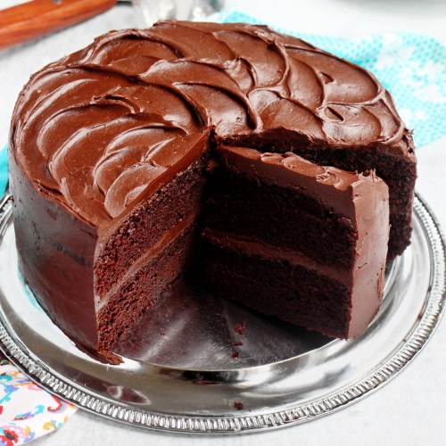

Chocolate Cake

One Bowl Chocolate Cake
Prep:20 minutes
Cook:30 minutes
Additional:10 minutes
Total:1 hour
Servings:24
Yield:2-9 inch cake layers
This is a rich and moist chocolate cake. It only takes a few
minutes to prepare the batter. Frost with your favorite chocolate frostings.
Ingredients
- 2 cups white sugar
- 1 3/4 cups all-purpose flour
- 3/4 cup unsweetened cocoa powder
- 1 1/2 teaspoons baking powder
- 1 1/2 teaspoons baking soda
- 1 teaspoon salt
- 2 eggs
- 1 cup milk
- 1/2 cup vegetable oil
- 2 teaspoons vanilla extract
- 1 cup boiling water
Steps
- Preheat oven to 350 deg F (175 degrees C). Grease and flour two nine inch
round pans.
- In a large bowl, stir together the sugar, flour, cocoa, baking powder, baking soda,
and salt. Add the eggs, milk, oil and vanilla,mix for two minutes on
medium speed of mixer. Stir in the boiling waterlast. Batter will be thin.
Pour evenly onto the prepared pans.
- Bake 30-35 minutes in a preheated oven, until the cake test done with a tootpick.
Cool in the pans for 10 minutes, then remove to a wire rack to cool completely.